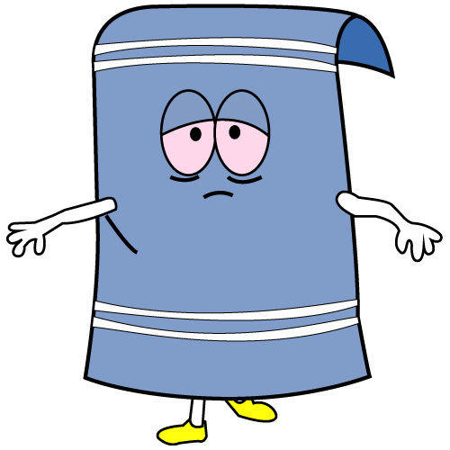

<!--
  Generated template for the FriendlistPage page.

  See http://ionicframework.com/docs/components/#navigation for more info on
  Ionic pages and navigation.
-->
<ion-header>

  <ion-navbar>
    <ion-title>Freundesliste</ion-title>
  </ion-navbar>

</ion-header>


<ion-content padding >
  <div padding>
    <ion-segment [(ngModel)]="friendlist">
      <ion-segment-button value="Friends">
        Friends
      </ion-segment-button>
      <ion-segment-button value="Groups">
        Groups
      </ion-segment-button>
    </ion-segment>
  </div>

  <div [ngSwitch]="friendlist">

    <ion-list *ngSwitchCase="'Friends'">
        <ion-item *ngFor="let friend of friends">
          <ion-thumbnail item-start>
          
          </ion-thumbnail>
          <h2>{{friend.name}}</h2>
          <button ion-button color="secondary" (click)="openChat(friend.id)" round outline>Chatten</button>
          <button ion-button color="danger" (click)="deleteFriend(friend.id)" round>Entfernen</button>
        </ion-item>
    </ion-list>


    <ion-list *ngSwitchCase="'Groups'">
      <ion-item *ngFor="let group of groups">
        <ion-thumbnail item-start>
        
        </ion-thumbnail>
        <h2>{{group.name}}</h2>
        <button ion-button color="secondary" (click)="showGroup(group)" round outline>Details</button>
        <button ion-button color="danger" (click)="leaveGroup(group)" round outline>Austreten</button>
      </ion-item>
    </ion-list>

  </div>
</ion-content>


<ion-footer>
  <ion-toolbar>
    <div text-center [ngSwitch]="friendlist">
      <ion-list *ngSwitchCase="'Friends'">
        <button ion-button color="secondary" (click)="addFriendPrompt()" round>Freund hinzufügen</button>
      </ion-list>
      <ion-list *ngSwitchCase="'Groups'">
        <button ion-button color="primary" (click)="addGroupModal()" round>Gruppe erstellen</button>
      </ion-list>
    </div>

  </ion-toolbar>
</ion-footer>
